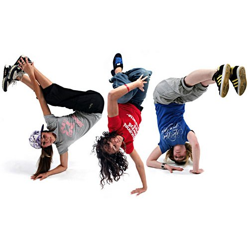
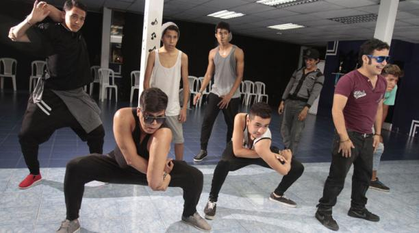
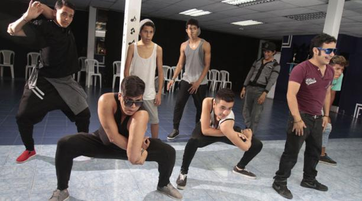

Todo sobre popping:
Su origen se sitúa en la costa oeste de EE.UU en los 70. Se da al bailarín Boogaloo Sam como el creador de este baile en Freno, California. Solía bailar otro estilo de baile funk llamado "Campbellocking" y hacer el robot que el mimo Robert Shields mostraba en su programa de television "Shields and Yarnell". Según cuenta Boogaloo Sam en el documental "Underground Dance Masters: Final History of a Forgotten Era", de pequeño bailaba de forma muy divertida en las fiestas caseras de su padre, haciendo boogaloo, un baile muy común en ese momento y que el describe como menear el cuerpo con ondas y desplazamientos. Una noche quiso crear un baile nuevo mezclando boogaloo con contracciones del cuerpo que el denomimo "popping". De esa mezcla de boogaloo y popping creo su estilo particular de baile que denomino "electric boogaloo". Como buen bailarín fue fomentando y ganando fama en house parties y tuvo la oportunidad de crear un grupo de baile y hacer un show en el programa de televisión Soul Train. En un primer momento se llamaron "Electric Boogaloos Lockers" ya que mezclaban su estilo de baile con el "Campbellocking". Un año después en 1977 acortaron el nombre a "Electric Boogaloos". Durante la era del breaking, los b-boys comenzaron a poner el popping y el locking en su baile gracias a programas como el "Soul Train". Mr. Wiggles dice, que desde que la gente en N.Y. adoptó el popping y lo volvió más "funky" y algo diferente del popping original, la gente comenzó a llamarle electric boogie en lugar de popping. Aunque ese comentario acerca del electro boogie es diferente a comentarios de otras autoridades del b-boying.
Musica
Se baila mayoritariamente con música Funk. Durante la década de 1980, muchos de los poppers también utilizaban "electro-funk" para sus rutinas de baile, debido a que las cajas de ritmos y sintetizadores eran muy popular y las bandas funk las integraban en su música y a los poppers les parecia que daba un toque mas robotico a la musica. Algunos de esos artistas más populares utilizados por los poppers son : Kraftwerk, Twighlight 22, Egyptian Lover, y Afrika Bambaataa. Fue incorporado más rap en la música y fue empleado por poppers durante la década de 1980, incluyendo a Kurtis Blow, Whodini, y Ice-T. Hoy en día, también son comunes algunos génerosRopa y Vestimenta
Actualmente, se opta por los pantalones de pinzas o pantalones más bien anchos, para poder marcar mejor los movimientos y pops. También es común ir vestido con la típica indumentaria llamada "pachuco", adaptada en los 70 por Boogaloo Sam en honor a cómo vestía su abuelo cuando él era niño. En el calzado, destacan los zapatos llamados hush puppies, pero los más comunes son zapatillas de deporte estilo puma suede, adidas y converse all-star.
  
